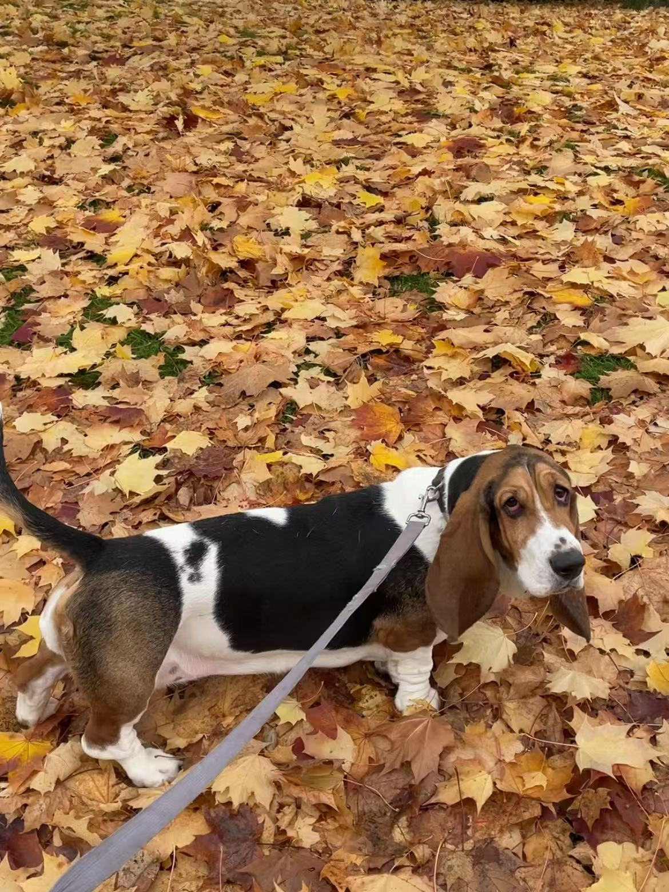

NATURAL — G.Soul
My cousin and I stayed in touch for a while, but over time, things became quieter between us.
Later, I heard from a mutual friend that there had been an incident.
Milky was taken by authorities and rehomed within less than 24 hours.
It shocked me.
The authorities received a report that Milky had been found outside on the street. Maybe she accidentally escaped from the backyard. My friend also suspected that one of my cousin's new neighbors disliked them and may have intentionally let Milky out.
The authorities knew my cousin was Milky’s owner, and they contacted her. According to our mutual friend and my cousin’s husband, my cousin was alone at the time, emotionally overwhelmed, and signed documents to “voluntarily give up” her rights to Milky. I was speechless.
I still have doubts about the situation. Normally, adoption and transfer procedures do not happen that quickly. I wondered whether someone specifically wanted Milky and had already arranged something beforehand.
Milky had also been professionally trained as a service dog, which made the entire situation even harder for me to understand.

I was never told the complete story, and I do not know how much of what I heard was emotionally filtered through shock and grief.
My cousin never spoke to me about it directly, and I never asked her about it either.
At one point, I thought about whether legal action might have been possible because Milky had been trained as a service dog. I even wanted to help pay for a lawsuit. But they had already tried to move on.
If I were in Boston, at least I could accompany my cousin, and maybe convince her for the lawsuit.
If they had already moved on, I had to move on, too, with my basset hound Shimmer. The best thing I could do is to pray for a good ending of the incident.